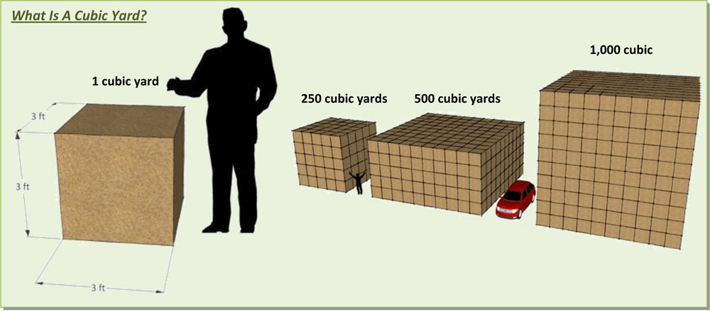

Preserve El Sereno
Did You Know?
Some not so well publicized facts about the Eastern & Lombardy Project
Did You Know?
Some not so well publicized facts about the Eastern & Lombardy Project
A Cautionary Tale
Did you know... In a previous El Sereno development debacle, developers targeting Elephant Hills were approved by the City for a 24-lot development. They then expanded the proposed project — without further City review — to 56 lots, roughly tripling the amount of grading required?
Members of the community working to protect the undeveloped hillside discovered the change and revealed it to the public. The fight against this development lasted years and was only resolved after a lawsuit.
Ignores City Guidelines
Did you know... The City of Los Angeles spent years developing Citywide Design Guidelines for new development in our city? The proposed project directly violates these guidelines in several ways: 1
- Ensure that new buildings are compatible in scale, massing, style, and/or architectural materials with existing structures in the surrounding neighborhood. In older neighborhoods, new developments should likewise respect the character of existing buildings with regards to height, scale, style, and architectural materials.
- For RD1.5, RD2, R3, R4, RAS3, and RAS4 [Residential] developments, apply additional setbacks in side and rear yards abutting single-family and/or R2 zoned lots.
- Where multi-family projects are adjacent to single-family zones, provide a sensitive transition by maintaining a height compatible with adjacent buildings.
- Mitigate negative shade/shadow and privacy impacts by stepping back upper floors and avoiding direct views into neighboring single-family yards.
Permanent Destruction
Did you know... Bancomer plans to export 59,500 cubic yards of soil from the site? Look at how big 1,000 cubic yards are. Now try to imagine nearly 60,000 of them.

Graphic courtesy of LA Department of City Planning, Baseline Hillside Ordinance Guide, pg. 21.
Too Close for Comfort
Did you know... The nearest residence on the south side of the project site is a mere 15' away from the planned structures? In their Mitigation Statement Bancomer states they will offset any impact to surrounding residences by planting a "5-foot wide landscape buffer." Does that sound like a reasonable solution?
1. In order to move forward with the proposed plan at Eastern and Lombardy, the property owner, Bancomer Development and City Terrace LLC, has requested the City of Los Angeles grant the following special exceptions:
- A Height District Change from 1D to 1
- A Zoning Change from [Q] R1-D and [Q] RD6-1 to RAS3-1
- A General Plan Amendment from Low Residential to Neighborhood Commercial
- To Waive Street Dedication Improvement requirements
- A Lot Line Adjustment and Tract Map Waiver
- An application for a Haul Route for exporting 59,500 Cubic Yards of soil from the site.